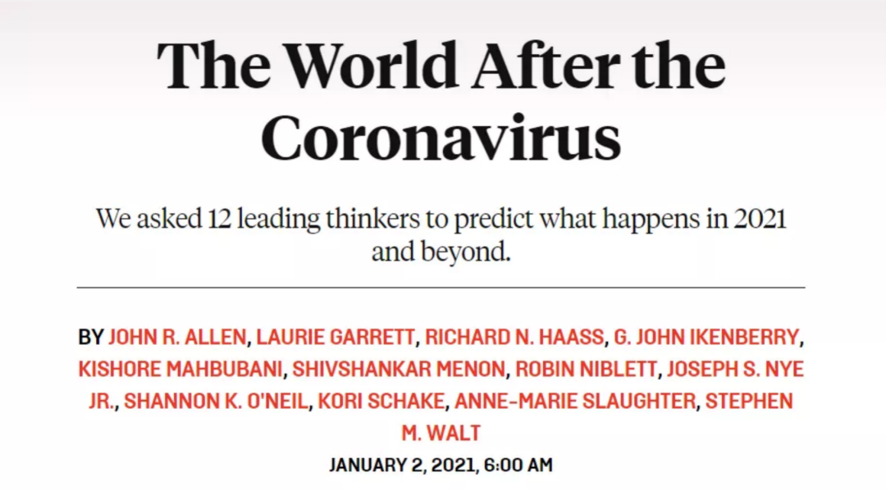
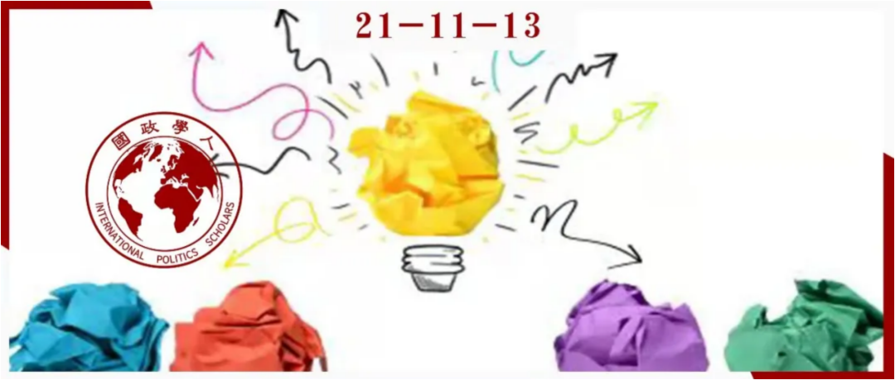
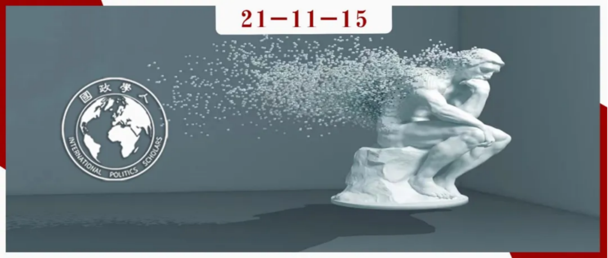
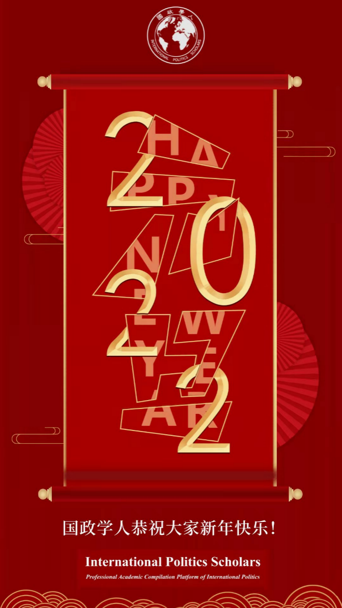

收录于合集 #年度精选 4个

国政学人年度十篇精选
01
【巅峰访谈】唐世平教授访谈阎学通教授：科学理论无国界，成不了“中国学派”
【嘉宾】 阎学通，国际关系理论家，清华大学首批文科资深教授，清华大学国际关系研究院院长，世界和平论坛秘书长，兼任中国国际关系学会副会长、中华美国学会副会长；2008年被美国《外交政策》杂志评为全球百大知识分子之一，2011年出版Ancient Chinese Thought, Modern Chinese Power并创建道义现实主义理论，2014年至2017年为爱斯唯尔高被引学者中唯一的政治学学者。
【采访】 唐世平，复旦大学特聘教授、陈树渠讲席教授、教育部“长江学者”特聘教授。他的Social Evolution of International Politics (《国际政治的社会演化》）（牛津大学出版社，2013年）于2015年获得国际研究协会（ISA）的“年度最佳著作”奖。他是获得这一奖项的第一位中国学者和第一位亚洲学者。他的最新英文专著是On Social Evolution: Phenomenon and Paradigm（《论社会演化：现象与范式》）（Routledge, 2020）。他还是“掌中星球”新一代旅游商业平台的创始人兼CEO。
【编者按】 农历新年之初，国政学人平台隆重推出新一期“巅峰访谈”：唐世平教授专访阎学通教授。访谈内容涵盖了阎学通对国际关系学术研究与学科发展的心得体会以及对其个人研究、学生培育、创办学术刊物与学术共同体的经验感想。字里行间凝结了阎教授的思想精华，也让我们看到阎教授对中国国际关系学科发展、人才培养与学术事业所作的贡献！衷心感谢唐世平教授、阎学通教授对国政学人的支持！
【原文链接】
【巅峰访谈】唐世平教授访谈阎学通教授：科学理论无国界，成不了“中国学派”
02
【名家专访】国政学人专访吴心伯教授：“学者外交家”的政策关怀
【嘉宾】 吴心伯，复旦大学特聘教授，国际问题研究院院长，教育部人文社科重点研究基地复旦大学美国研究中心主任， 复旦发展研究院副院长，外交部第四届外交政策咨询委员会委员，习近平外交思想研究中心特约专家，中国亚洲太平洋学会副会长，中华美国学会副会长，上海市国际关系学会副会长，上海美国学会会长，上海市美国问题研究所所长。担任《美国研究》、《国际展望》、《亚太安全与海洋研究》以及美国《华盛顿季刊》（The Washington Quarterly）、英国《欧洲国际安全杂志》(European Journal of International Security)等学术刊物编委，英国《国际事务》（International Affairs）国际顾问，主编《美国问题研究》和“21世纪的美国与世界”丛书。曾任世界经济论坛“地缘政治风险”理事会副主席（2012-2013）、主席（2013-2014），现任美国亚洲协会政策研究所理事，三边委员会会员，亚太安全合作理事会（CSCAP）中国委员会委员。
【采访】 卫艺璇，国政学人特约记者，复旦大学国际关系与公共事务学院2020级博士生；吴虚怀，复旦大学国际关系与公共事务学院2019级博士生。
【编者按】 国政学人新一期“名家访谈”重磅发布：国政学人专访吴心伯教授。吴心伯教授是中国美国问题研究和中美关系研究的领军人物之一，也是深度参与中美国际交流，为国家政策咨询提供智力支持的“学者外交家”。历史学的学术背景为吴心伯教授的研究打上了怎样的烙印？中国和西方国际关系研究呈现出哪些差异？美国社会和中美关系正在经历着怎样的变化？青年学者在学术道路上又要注意在哪些问题上“避雷”？吴心伯教授围绕学术经历、学科评论、美国研究和青年寄语等四个话题向我们分享了他的感悟、观点和期许。在此，由衷感谢吴心伯教授对国政学人的支持！
【原文链接】
【名家专访】国政学人专访吴心伯教授：“学者外交家”的政策关怀
03
【名家访谈】国政学人专访王逸舟教授：永不止步的学术长跑者
【嘉宾】 王逸舟，北京大学博雅特聘教授、《国际政治研究》杂志主编、中国国际关系学会副会长。1957年出生在武汉市。1975年高中毕业后，在湖北省钟祥县长滩公社知青农场劳动两年。国家恢复高考制度后于1977年底考入湖北大学（原武汉师范学院），1982年考入中国社会科学院研究生院，先后获得法学学士、硕士、博士学位。1988年至2009年在中国社会科学院工作。曾任中国社会科学院马列研究所当代研究室副主任，中国社会科学院世界经济与政治研究所国际政治研究室主任、副所长、研究员，《世界经济与政治》杂志主编，中国社会科学院研究生院世界经济与政治研究系主任、教授、博士生导师。目前兼任外交学院、中国人民大学、公安大学、中国传媒大学、浙江大学等十数所院校的客座教授或研究员，以及国内外十几家学术刊物的编委。近年来主持完成多个重大科研项目。迄今为止，到过50多个国家及地区开会、讲学和参观。
【采访】 严展宇，国政学人特约记者，北京大学国际关系学院2018级博士生；施榕，国政学人特约记者，北京大学国际关系学院2018级博士生；杨紫茵：国政学人特约记者，北京大学国际关系学院2020级博士生。
【编者按】 国政学人新一期“名家访谈”重磅发布：国政学人专访北京大学王逸舟教授。王逸舟教授是中国国际关系学界的领军学者。王教授就其学术经历、学科评论、外交批评及青年寄语等话题与我们分享了他的感悟、观点和期许。通过王逸舟教授的话语间，我们能看到一位严谨治学的儒雅学者，他主张“真善美”的三位一体思路；我们看到一位永不止步的学术跑者，他强调国际关系研究光谱要更加多层次、多元化；我们看到一位语重心长的和蔼长者，他激励后辈们勇于竞争，且不怕竞争。在此，由衷感谢王逸舟教授对国政学人的支持！
【原文链接】
04
【访谈实录】罗伯特·杰维斯关于政治科学、政治和政策的反思
【受访】 罗伯特·杰维斯（Robert Jervis，1940-2021），哥伦比亚大学政治学系阿德莱·史蒂文森讲座教授、美国科学进步协会会员、美国艺术与科学院院士，曾在加州大学洛杉矶分校（1974-1980）和哈佛大学（1968-1974）任教授。2000—2001年任美国政治学会主席。他的研究领域涉及政治心理学、国际关系理论、决策分析、核战略和美国外交政策等，是国际政治心理学的集大成者。他的专著《国际政治中的知觉与错误知觉》《系统效应：政治与社会生活中的复杂性》是政治心理学和社会科学的经典名著。
【采访】 弗兰克·加文（Frank Gavin），《德克萨斯国家安全评论》编委会主席
【导读】 2019年8月12日的一期《左右为难》（Horns of a Dilemma）播客，《德克萨斯国家安全评论》（TexasNational Security Review）编委会主席弗兰克·加文（Frank Gavin）采访了政治学家罗伯特·杰维斯（RobertJervis）。加文探讨了塑造杰维斯职业生涯的因素（追溯到二十世纪五十年代末，杰维斯在欧柏林学院读书的时光）、当今政治学特别是安全领域研究的状况，以及政治学家如何应对从其理论主张的宏大性到平衡政策相关工作中的政治考虑等挑战。
【原文链接】
05
【新年重磅】约瑟夫·奈等12名顶级专家：新冠疫情一年复盘，“后疫情时代”何去何从？| 国政学人

【编译】 吕紫烟、姚寰宇（国政学人编译员，山东大学东北亚学院国际政治与经济系）
【来源】
https://foreignpolicy.com/2021/01/02/2021-coronavirus-predictions-global- thinkers-after-vaccine/
【 编者按】 2020年3月，在全球抗击新冠肺炎疫情还处在“上半场”时，《外交政策》杂志曾邀请约瑟夫·奈、约翰·艾伦、马凯硕、史蒂芬·沃尔特、约翰·伊肯伯里等12名世界各国国际关系学界顶级专家就疫情对国际关系的影响进行了深入分析。随着新年的到来，《外交政策》再次邀请了这12名专家，对2020年人类抗疫历程进行复盘，并对2021年“后疫情时代”的世界进行展望。
【原文链接】
【新年重磅】约瑟夫·奈等12名顶级专家：新冠疫情一年复盘，“后疫情时代”何去何从？| 国政学人
06
【重磅评论】时殷弘：拜登政府对华态势考察：侧重于战略军事 | 国政学人
【作者】 时殷弘，中国当代一流国际政治学者，国际战略家，著名美国问题学者。现任中国人民大学国际关系学院二级教授、院学术委员会主任、中国人民大学美国研究中心主任。从事国际关系理论思想、国际关系史、战略理论、当今国际政治、中美两国对外政策和战略、东亚安全等方面的研究和教学，2011年2月17日被聘请为国务院参事。本文经时殷弘教授授权国政学人首发。
【原文链接】
【重磅评论】时殷弘：拜登政府对华态势考察：侧重于战略军事 | 国政学人
07
【春晚研究】1983-2013年央视春节联欢晚会流行歌曲的地缘政治分析｜国政学人
【作者】 Chen Liu（刘晨，华南师范大学文化产业与文化地理研究中心/英国伦敦大学皇家赫洛威学院地理系），现为中山大学地理科学与规划学院副教授；Ning An（安宁，英国格拉斯哥大学地理与地球科学学院），现于广州大学任教。主要从事政治地理学、地缘政治学、社会和文化地理学等领域的研究及教学工作；Hong Zhu（朱竑，华南师范大学文化产业与文化地理研究中心），现任广州大学华南人文地理与城市发展研究中心主任，主要从事社会文化地理学、旅游地理学等方面的教学与研究工作。
【编译】 杨稚珉（国政学人编译员，上海外国语大学）
【来源】 Liu, C., An, N., & Zhu, H. (2015). A Geopolitical Analysis of Popular Songs in the CCTV Spring Festival Gala, 1983–2013. Geopolitics, 20(3), 606–625.
【摘要】 本文以“大众型地缘政治”（popular geopolitics）和“实用型地缘政治”（practical geopolitics）为理论背景，在当下的中国地缘政治战略语境中，试图探讨流行歌曲如何代表和再现地缘政治的相关知识，以及这些歌曲通过怎样的宣传使政府的国内、国际政策合法化获得认同。同时，本文作为一篇通过中国流行音乐对地缘政治进行研究的文章，也可被视作是从非西方的角度对大众型和实用型地缘政治进行文献补充。
【原文链接】
【春晚研究】1983-2013年央视春节联欢晚会流行歌曲的地缘政治分析｜国政学人
08
** 【会议摘编】美国学者看中国崛起：理论、实践及对拜登政府的启示 | 国政学人**
【编译】 房宇馨（国政学人编译员，北京外国语大学国际关系学院）
【来源】 https://www.youtube.com/watch?v=0FKt1NKaKB0&feature=youtu.be
【编者按】 继上次国政学人转载《中国学者对拜登政府执政后的重大国际问题笔谈》之后，我们摘编了美国波士顿大学弗雷德里克·S. 帕迪长期未来研究中心（The Frederick S. Pardee Center for the Study of the Longer-Range Future）于美东时间2月26日举办的以“中国崛起：理论、实践与对拜登政府的影响”为题的线上研讨会，并对会议发言的重点内容进行了摘编。研究中美关系的另一扇窗户就是把握美国学者对中国崛起的认知和政策建议，从而达到知己知彼的效果。
【原文链接】
【会议摘编】美国学者看中国崛起：理论、实践及对拜登政府的启示 | 国政学人
09
米尔斯海默：抛弃理论——为何单纯的假设检验不利于国际关系学的发展 | 国政学人

【作者】 约翰·米尔斯海默（John Mearsheimer），芝加哥大学政治学系杰出教授（the R. Wendell Harrison Distinguished Service Professor）,国际关系理论家，“进攻性现实主义”的创立者，著有《大国政治的悲剧》、《大幻想：自由主义之梦与国际现实》、《以色列游说集团与美国对外政策》（与斯蒂芬·沃尔特合著）等。斯蒂芬·沃尔特（Stephen Walt），哈佛大学国际关系学教授（the Robert and Renee Belfer Professor of International Affairs），“威胁均衡”理论的提出者，著有《以色列游说集团与美国对外政策》（与约翰·米尔斯海默合著）、《联盟的起源》等。
【编译】 阮镇炜（国政学人编译员，伦敦大学学院）
【来源】 Mearsheimer, J and Walt, S. (2013) Leaving theory behind: Why simplistic hypothesis testing is bad for International Relations, European Journal of International Relations, 19(3), pp.427-457
【摘要】 理论创立与假设检验都是社会科学的关键组成部分，但前者更为重要。然而，近些年来，国际关系学者并没有花费太多功夫去创立和改进理论，或是用理论去指导实证研究。相反，他们越来越重视“单纯的假设检验”，强调充分证实的经验规律（empirical regularities）。然而，把单纯的假设检验置于优先地位是一种错误倾向，因为对理论的关注不足会导致错误的实证模型，或误导对关键概念的衡量。此外，国际关系学中大部分数据的质量不佳，这使得单纯的假设检验难以产出积累性知识。这种从理论向单纯的假设检验的转向，反映了学者们扩张国际关系学领域并将其专业化的持续渴望，以及学者个人短期的职业激励。这种倾向也扩大了象牙塔与现实世界之间的鸿沟，使政策制定者和关心相关事务的公民认为国际关系学术研究的用处不大。遗憾的是，这种趋势很可能持续下去，除非学者们集体决定改变主流学术激励机制。
【原文链接】
米尔斯海默：抛弃理论——为何单纯的假设检验不利于国际关系学的发展 | 国政学人
10
美国人为何都讨厌智库？｜国政学人

**
**
【作者】 马修·罗扬斯基（Matthew Rojansky），威尔逊中心凯南研究所所长、约翰·霍普金斯高级国际研究学院的兼职教授和达特茅斯会议的美方执行秘书。杰里米·夏皮罗（Jeremy Shapiro），欧洲对外关系理事会研究主任。
【编译】 李燕（国政学人编译员，辽宁大学国际经济政治学院硕士研究生）
【来源】 Matthew Rojansky & Jeremy Shapiro, Why Everyone Hates Think Tanks, Foreign Policy, MAY 28, 2021. International Relations, 19(3), pp.427-457
【原文链接】

文案 | 邱意雯
美编 | 云琪布日
排版 | 陆霜滢
文章观点不代表本平台观点，本平台评译分享的文章均出于专业学习之用, 不以任何盈利为目的，内容主要呈现对原文的介绍，原文内容请通过各高校购买的数据库自行下载。

国政学人
支持学术公益与知识传播
微信扫一扫赞赏作者 __赞赏
已喜欢，对作者说句悄悄话
取消 __
发送给作者
发送
最多40字，当前共字
上一页 1/3 下一页
长按二维码向我转账
支持学术公益与知识传播
受苹果公司新规定影响，微信 iOS 版的赞赏功能被关闭，可通过二维码转账支持公众号。